CM 1 : Rappels, faits marquants, horizons temporels
Chapitre I, §1-3 : Mesurer et situer la croissance économique
Pierre Beaucoral
L2 AES : Semestre 1
Plan de la séance
Rappels sur le PIB (nominal/réel, croissance, cycles)
Cinq faits marquants de l’histoire de la croissance
Les trois horizons temporels de la macroéconomie (CT/MT/LT)
Aujourd’hui, on pose les fondations mesurables du cours : comment évalue-t-on la richesse produite, que nous apprend l’histoire longue de la croissance, et à quel horizon se situe-t-on quand on parle de « croissance » ?
Source : Ouedraogo (2025-2026), Chapitre I ; Mathonnat (2018-2019), Introduction.
Objectifs de la séance
À l’issue de cette séance, vous saurez :
Distinguer PIB nominal et PIB réel, et calculer un taux de croissance.
Différencier expansion, récession et dépression.
Restituer les cinq faits marquants de la croissance économique.
Distinguer les horizons court terme, moyen terme et long terme, et les déterminants dominants à chaque horizon.
Deux indicateurs pour commencer
La France a-t-elle vécu, depuis 2008, une succession de crises ou une stagnation prolongée ?
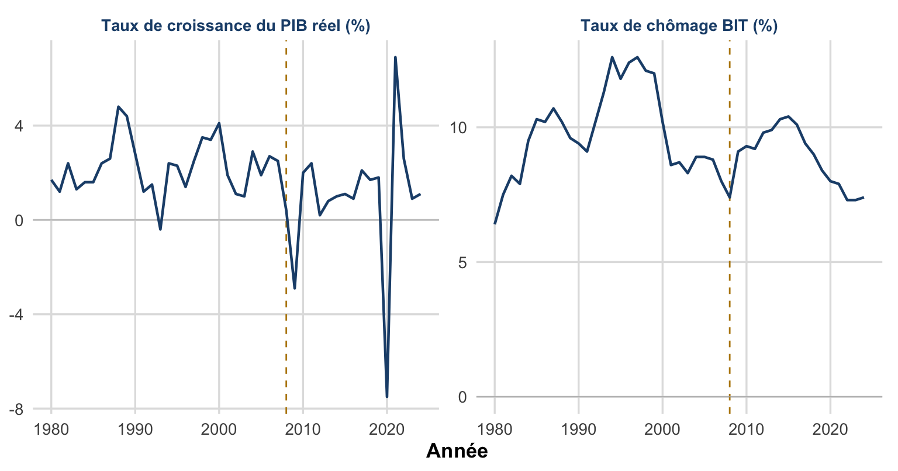
Figure 1: Croissance du PIB réel et taux de chômage en France, 1980-2024. Source : Banque mondiale, World Development Indicators (séries NY.GDP.MKTP.KD.ZG et SL.UEM.TOTL.NE.ZS, d’après les comptes nationaux et l’enquête Emploi de l’Insee).
Ligne verticale : déclenchement de la crise financière de 2008. Idée à garder en tête pour tout le semestre : croissance faible + chômage élevé et persistant = hypothèse de « stagnation séculaire », débattue en introduction du cours de C. Mathonnat.
1. Rappels sur le PIB
PIB (Produit intérieur brut) : mesure de la richesse, quantité de biens et de services, créée sur un territoire donné au cours d’une période donnée (trimestre ou année).
PIB nominal
Quantités produites × prix courants.
Combine un effet volume et un effet prix.
PIB réel
Quantités produites × prix constants (année de référence).
Isole le seul effet volume : mesure pertinente pour comparer l’activité dans le temps.
PIB nominal, PIB réel : la logique de la décomposition
flowchart TD
A[Quantites x Prix courants] --> B[PIB nominal]
C[Quantites x Prix constants] --> D[PIB reel]
B --> E[Effet volume]
B --> F[Effet prix]
D --> G[Effet volume seul]
Le PIB nominal combine un effet volume et un effet prix ; en fixant les prix, le PIB réel isole le seul effet volume.
C’est cette décomposition qui justifie de toujours calculer un taux de croissance sur le PIB réel : le PIB nominal peut augmenter sans que la richesse produite augmente, si c’est l’effet prix qui domine.
PIB nominal, PIB réel : le coin d’inflation dans les données françaises
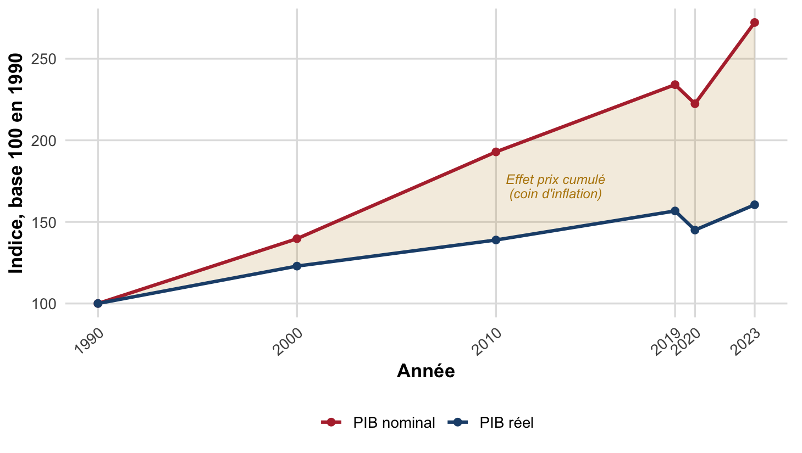
Figure 2: PIB nominal et PIB réel, France, indices base 100 en 1990. L’écart croissant entre les deux courbes (zone grisée) est l’effet prix cumulé : c’est le « coin d’inflation ». Indice réel construit à partir des taux de croissance annuels du PIB réel ; indice nominal à partir des niveaux de PIB en valeur. Source : Banque mondiale, WDI (NY.GDP.MKTP.KD.ZG) et Insee, comptes nationaux annuels.
Le PIB nominal croît plus vite que le PIB réel sur toute la période (× 2,7 contre × 1,6 entre 1990 et 2023) : l’écart traduit l’inflation cumulée. C’est pour isoler la seule création de richesse que le taux de croissance se calcule toujours sur le PIB réel.
PIB par habitant et PIB par habitant en PPA
PIB par habitant (ou par tête) : PIB réel rapporté à la population, indicateur usuel de niveau de vie moyen.
PIB par habitant en PPA (parité de pouvoir d’achat) : PIB par habitant corrigé des écarts de coût de la vie entre pays, ce qui permet de comparer le pouvoir d’achat réel, pas seulement la valeur convertie au taux de change.
Pourquoi cette distinction compte : deux pays au même PIB par habitant en dollars courants peuvent avoir un niveau de vie réel très différent si le coût de la vie diffère fortement entre eux.
PIB par habitant : taux de change courant contre PPA, quatre pays en 2022
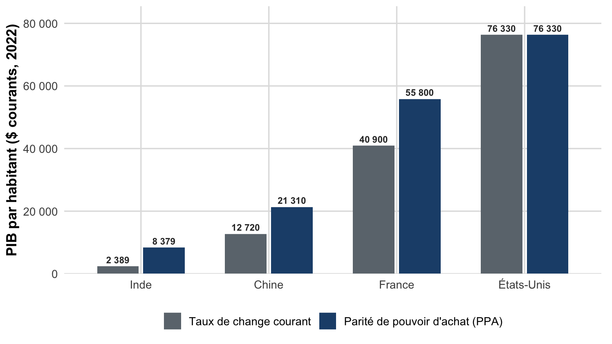
Figure 3: PIB par habitant en dollars courants, taux de change du marché contre parité de pouvoir d’achat (PPA), Chine, Inde, France et États-Unis, 2022. Source : Banque mondiale, World Development Indicators (WDI), indicateurs NY.GDP.PCAP.CD (taux de change courant) et NY.GDP.PCAP.PP.CD (PPA). Valeurs figées en dur.
La correction PPA rehausse fortement le niveau de vie mesuré de la Chine (+68 %) et surtout de l’Inde (+251 %), pays où le coût de la vie est bas, alors qu’elle change peu la position de la France et des États-Unis. C’est exactement l’exemple de la phrase-clé précédente, sur données réelles.
Le taux de croissance mesure le rythme de variation du PIB réel
\[
\text{Taux de croissance du PIB}_t = \frac{PIB_t - PIB_{t-1}}{PIB_{t-1}} \times 100
\]
On calcule toujours le taux de croissance sur le PIB réel, jamais sur le PIB nominal, sinon on mesurerait en partie de l’inflation, pas de la richesse créée.
Expansion, récession, dépression : trois régimes du cycle
Expansion : croissance du PIB positive.
Récession : croissance du PIB négative pendant au moins deux trimestres consécutifs (un simple ralentissement, par exemple de 3 % à 1 %, n’est pas une récession : le PIB augmente encore).
Dépression : baisse forte et prolongée de l’activité, une récession sévère et durable.
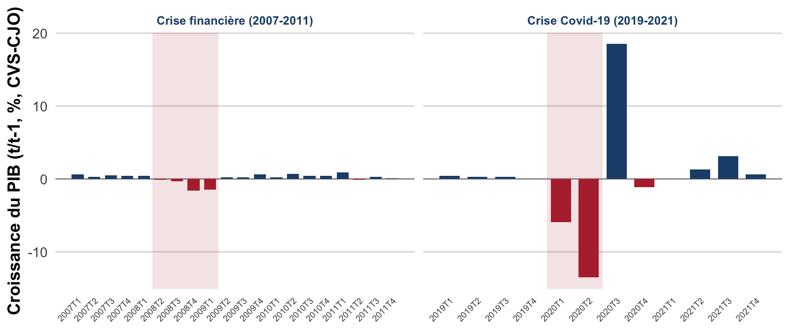
Figure 4: Croissance trimestrielle du PIB réel en France (t/t-1, %, CVS-CJO), autour des deux récessions techniques les plus récentes. Bandes grisées : au moins deux trimestres consécutifs de croissance négative (règle de la diapo précédente). Source : Insee, comptes nationaux trimestriels, PIB en volume, CVS-CJO (série concordante avec Eurostat, namq_10_gdp, chain-linked volumes). Valeurs figées en dur.
2020T4, isolé entre deux trimestres positifs, n’est pas grisé : il ne remplit pas le critère des deux trimestres consécutifs.
2. Cinq faits marquants de la croissance
L’observation de longue période fait apparaître cinq régularités empiriques qui structurent la réflexion sur la croissance, et, en creux, sur le rôle de la politique économique.
La croissance soutenue est récente
Forte hausse du niveau de vie dans l’OCDE après 1950
Convergence inégale entre pays
Ralentissement depuis les années 1970
Inégalités : baisse entre pays, hausse au sein des pays
Fait 1 : La croissance soutenue est un phénomène historiquement récent
Cinq ruptures successives dessinent la trajectoire du PIB mondial : cliquez pour les faire apparaître, cumulativement.
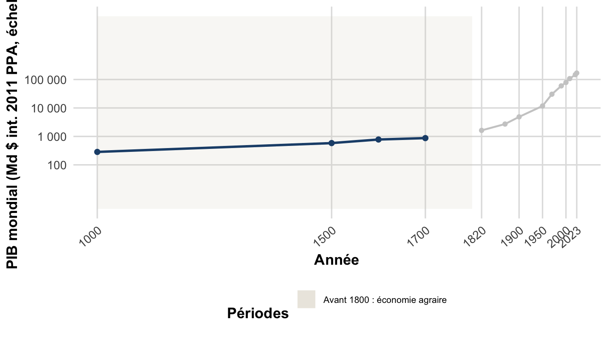
Figure 5
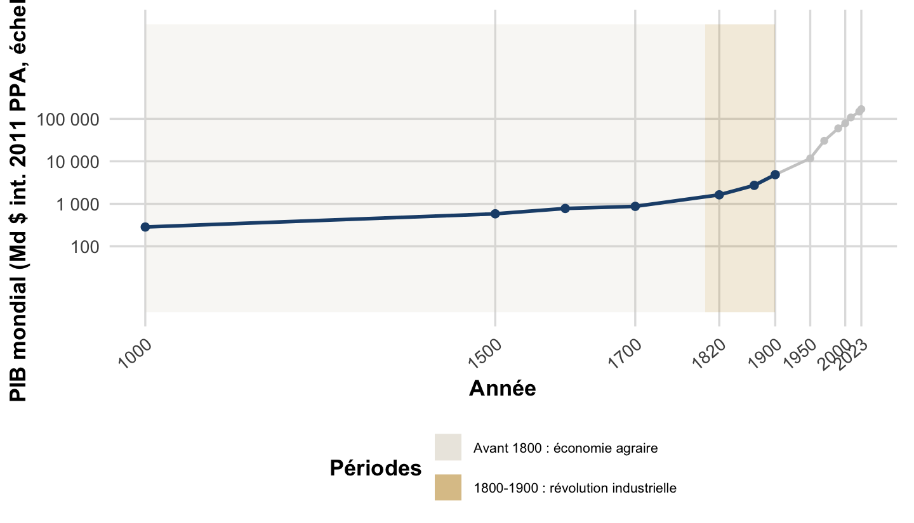
Figure 6
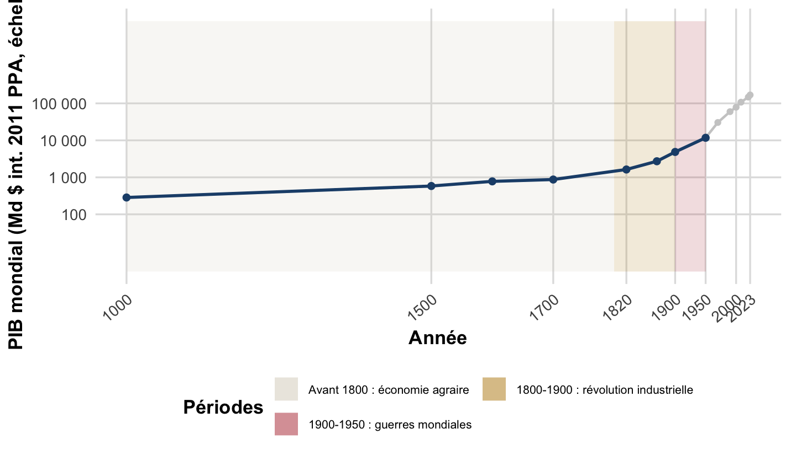
Figure 7
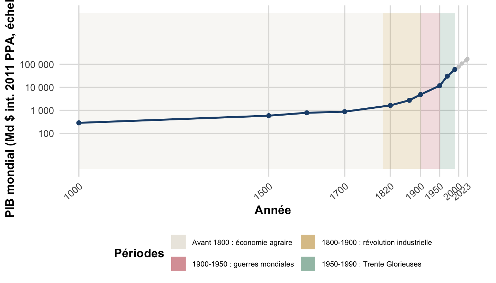
Figure 8
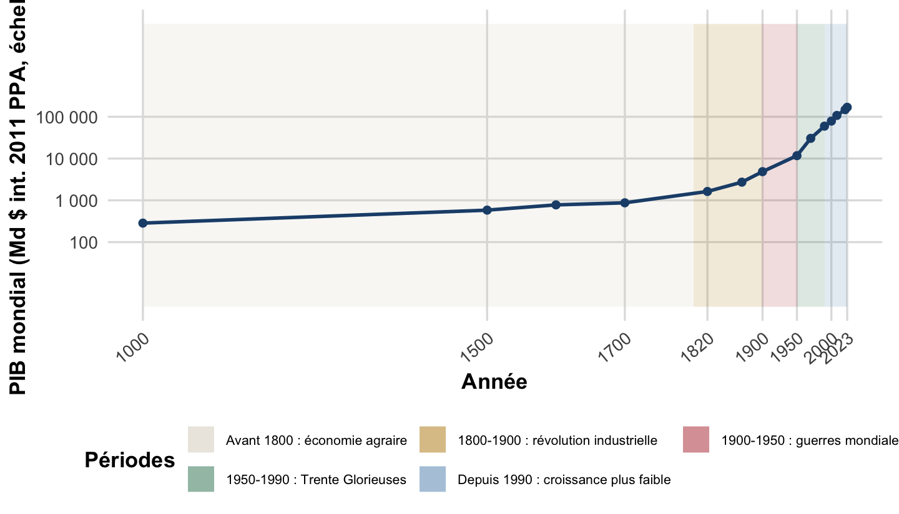
Figure 9
Évolution du PIB mondial, an 1000-2023, échelle logarithmique. Avant la révolution industrielle (1760-1820), le PIB mondial croît très lentement pendant des siècles ; il explose ensuite de façon quasi verticale sur une échelle logarithmique. Source : Maddison Project Database (2023), via Our World in Data (ourworldindata.org/grapher/global-gdp-over-the-long-run).
Fait 2 : Une forte hausse du niveau de vie dans l’OCDE, surtout après 1950
Entre 1950 et 2022, le revenu par habitant a été multiplié par :
× 3,8 États-Unis
× 4,7 France
× 7,5 Allemagne
× 12,5 Japon
. . .
Le phénomène est massif, mais très hétérogène, y compris entre pays pourtant tous développés dès 1950.
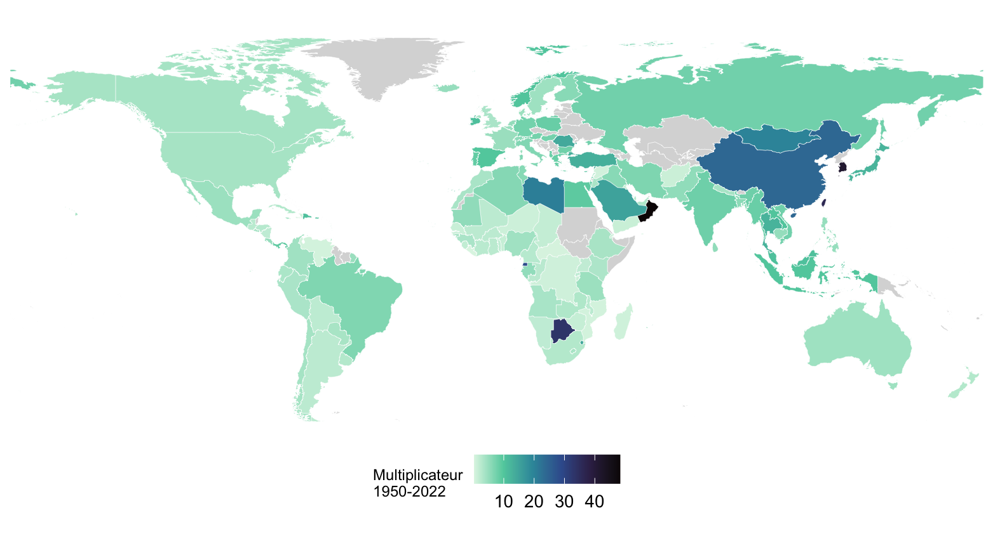
Figure 10: Multiplicateur du revenu par habitant entre 1950 et 2022, par pays. Source : Maddison Project Database (2023). Fond de carte : Natural Earth. Les pays en gris n’ont pas de données Maddison pour 1950 (notamment ex-URSS et ex-Yougoslavie).
Les quatre pays sont tous des économies développées dès 1950 : l’écart de multiplicateur (x 3,8 à x 12,5) montre que le rattrapage de niveau de vie après-guerre a été massif partout, mais très inégal, y compris au sein du monde développé.
Fait 3 : Une convergence inégale entre pays
Convergence : phénomène par lequel les pays initialement moins riches connaissent une croissance plus forte, réduisant leur écart avec les pays les plus riches.
Convergence observée : au sein de l’OCDE (rattrapage), et pour plusieurs pays asiatiques (Corée du Sud, Indonésie, Malaisie, Thaïlande, Chine).
Non-convergence : pour la plupart des pays d’Afrique subsaharienne, et une partie de l’Amérique latine.
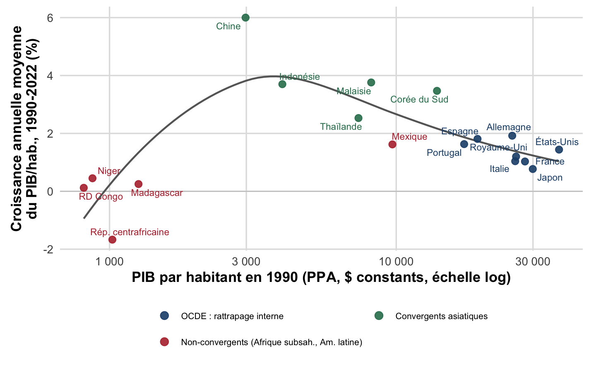
Figure 11: Convergence du PIB par habitant, 1990-2022. Chaque point est un pays : abscisse = PIB par habitant en 1990 (PPA, dollars constants, échelle logarithmique) ; ordonnée = taux de croissance annuel moyen du PIB par habitant entre 1990 et 2022. Source : Banque mondiale / Maddison Project Database (2023).
Les pays convergents (Chine, Corée du Sud, Indonésie, Malaisie, Thaïlande) partaient d’un niveau bas en 1990 et affichent la croissance la plus forte : ils rattrapent les pays riches. À niveau initial comparable, les pays non convergents (RD Congo, Niger, Rép. centrafricaine, Madagascar, Mexique) stagnent ou reculent : l’écart se creuse. Au sein de l’OCDE, la relation négative entre niveau initial et croissance (rattrapage) est plus ténue.
Fait 4 : Un ralentissement du taux de croissance depuis les années 1970
Dans les pays de l’OCDE, l’économie continue de croître, mais à un rythme moins soutenu qu’avant les chocs pétroliers.
. . .
Principale explication : le ralentissement des gains de productivité, un thème que nous retrouverons au chapitre II à travers la loi d’Okun et, plus loin dans le cours, à travers le débat sur la stagnation séculaire (R. Gordon, L. Summers).
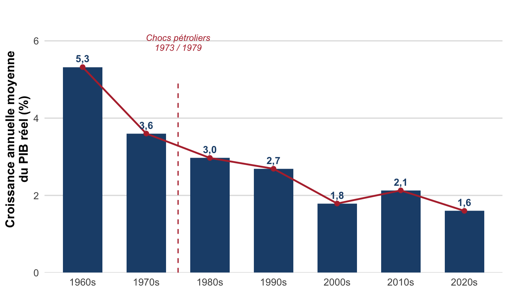
Figure 12: Croissance annuelle moyenne du PIB réel, par décennie, agrégat OCDE. La décennie « 2020s » est incomplète (2020-2024) et marquée par la crise Covid-19 de 2020. Source : Banque mondiale, World Development Indicators (WDI), indicateur NY.GDP.MKTP.KD.ZG, pays agrégé « OECD members » (code OED) ; OCDE pour 2020-2024.
La croissance de l’OCDE reste positive sur toute la période, mais son rythme se réduit fortement après les chocs pétroliers de 1973 et 1979 (5,3 % en moyenne dans les années 1960 contre 1,8 % dans les années 2000) : c’est la baisse tendancielle des gains de productivité qui explique l’essentiel de ce ralentissement. La décennie 2020s (incomplète, 2020-2024) reste marquée par le choc Covid-19 de 2020.
Fait 5 : Une évolution contrastée des inégalités
Entre pays : baisse des écarts de revenu entre pays, conséquence, notamment, de la convergence partielle (fait 3).
Au sein des pays : hausse des inégalités internes dans de nombreux pays de l’OCDE.
Facteurs identifiés : mondialisation, changement technologique, évolution du rôle de l’État, financiarisation de l’économie.
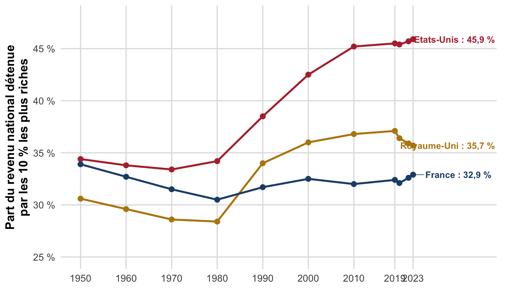
Figure 13: Part du revenu national (avant impôts et transferts) détenue par les 10 % les plus riches, 1950-2023. La forme en U reflète un recul des inégalités jusqu’aux années 1980, suivi d’une forte remontée, surtout aux États-Unis. Source : World Inequality Lab, WID.world (série top 10 % income share, pretax national income).
Depuis 1980, la part du revenu national captée par les 10 % les plus riches augmente fortement aux États-Unis (34 % à 46 % environ) et, dans une moindre mesure, au Royaume-Uni (28 % à 36 % environ), alors qu’elle reste comparativement stable en France (autour de 32-33 %) : la hausse des inégalités internes n’est ni uniforme, ni inévitable, elle dépend des choix nationaux (fiscalité, négociation salariale, régulation).
3. Les horizons temporels de la macroéconomie
Pourquoi distinguer des horizons ? Parce que les déterminants de l’activité économique ne sont pas les mêmes selon la durée considérée, et donc les politiques économiques pertinentes non plus.
CT → dominé par la demande · MT → retour vers le potentiel · LT → déterminé par l’offre
flowchart LR
A["Court terme<br/>Demande domine<br/>Capital et technologie fixes"] --> B["Moyen terme<br/>Retour vers le potentiel<br/>Facteurs quasi fixes"]
B --> C["Long terme<br/>Offre domine<br/>Tous les facteurs deviennent variables"]
À mesure que l’horizon s’allonge, davantage de facteurs cessent d’être fixes : à court terme seule la demande varie, à long terme tous les déterminants de l’offre deviennent variables.
Le court terme : des fluctuations tirées par la demande
Court terme (CT) : quelques années. Les fluctuations de l’activité (variations du PIB autour de sa tendance) sont dominées par la demande : confiance des consommateurs, taux d’intérêt, etc.
. . .
C’est l’horizon des politiques de stabilisation (chapitre I, §5) : agir sur la demande pour limiter l’écart entre production effective et production potentielle.
Figure 14: Croissance annuelle du PIB par habitant, France, 1951-2022. Les récessions (croissance négative) sont marquées en rouge, avec les quatre chocs majeurs de la période. Source : Maddison Project Database (2023).
D’une année sur l’autre, le PIB par habitant fluctue nettement autour de sa tendance : ces à-coups (récessions en rouge) sont dominés par des chocs de demande (confiance, investissement, commerce extérieur), l’horizon du court terme.
Le moyen terme : un retour vers le potentiel
Moyen terme (MT) : une décennie ou moins. L’activité tend à revenir vers son niveau potentiel, déterminé par des facteurs d’offre. Le stock de capital, la technologie, le travail disponible et les institutions sont supposés quasi fixes à cet horizon.
Figure 15: PIB par habitant, France, 1985-2022, échelle logarithmique (zoom sur les décennies récentes pour faire ressortir les cycles). La courbe grise pointillée est la tendance de moyen-long terme (régression locale, loess, sur le log du PIB/hab) ; les écarts à cette tendance sont coloriés en vert (au-dessus du potentiel) ou en rouge (en dessous). Source : Maddison Project Database (2023).
Les écarts à la tendance, positifs en vert (expansion de la fin des années 1990 et du milieu des années 2000) ou négatifs en rouge (récession du début des années 1990, crise de 2009, Covid-19 en 2020), ne persistent pas : l’activité revient vers son niveau potentiel en quelques années, l’horizon du moyen terme.
Le long terme : une croissance tendancielle tirée par l’offre
Long terme (LT) : plusieurs décennies. Tous les facteurs deviennent variables. La croissance de long terme s’explique par les facteurs d’offre : accumulation du capital, progrès technique, ressources humaines (quantité et qualité de la main-d’œuvre).
. . .
C’est l’horizon des politiques d’allocation (chapitre I, §5) : élever la trajectoire de croissance potentielle plutôt que de corriger un écart ponctuel.
Figure 16: PIB par habitant, France, 1985-2022, échelle logarithmique (même fenêtre et même axe que la diapositive précédente). Trait fin gris : PIB/hab observé. Trait épais bleu : tendance de moyen-long terme (loess, même ajustement que la diapositive précédente). Source : Maddison Project Database (2023).
Sur la même fenêtre que la diapositive précédente, l’attention se déplace des cycles vers la tendance (en bleu) : sa pente, plus faible après les années 2000, reflète le ralentissement des gains de productivité (offre). À l’horizon long, ce sont ces déterminants d’offre, et non les écarts de moyen terme, qui comptent.
À retenir, et pour la prochaine fois
À retenir
Le PIB réel (prix constants) est la mesure de référence pour comparer l’activité dans le temps ; ses dérivés (par habitant, en PPA) servent aux comparaisons internationales.
Récession = croissance négative pendant au moins deux trimestres, pas un simple ralentissement.
Cinq faits marquants : croissance récente, hausse massive mais inégale du niveau de vie, convergence sélective, ralentissement post-1970, inégalités contrastées.
Trois horizons (CT/MT/LT) organisent l’analyse : demande à court terme, retour au potentiel à moyen terme, offre à long terme.
Pour la prochaine fois
Relire le résumé du chapitre I, §1-3 (cours/chap1.qmd).
Réviser la politique économique et les distinctions normatif/positif, néoclassique/keynésien (chapitre I, §4).
TD 1 : préparer les objectifs et instruments de politique économique (règle de Tinbergen).
Prochain cours (CM 2) : politique économique, fonctions de Musgrave, modèle OA-DA et ses quatre chocs.